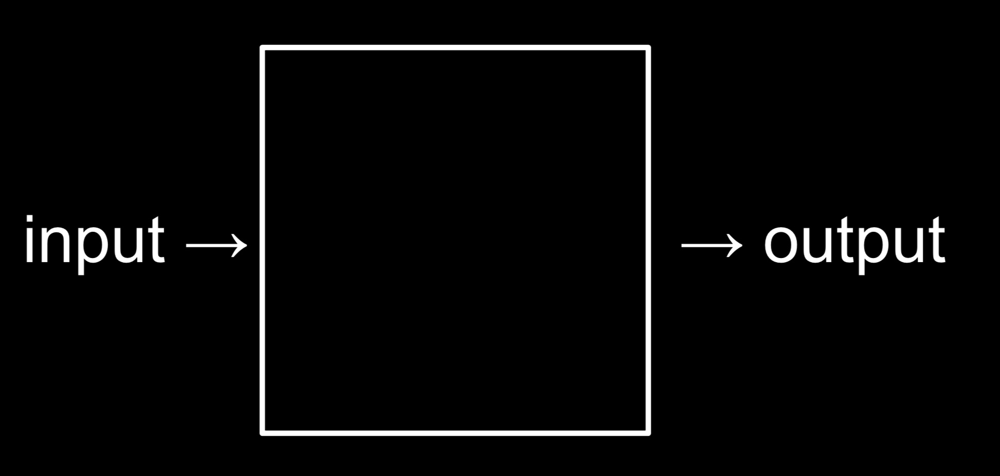
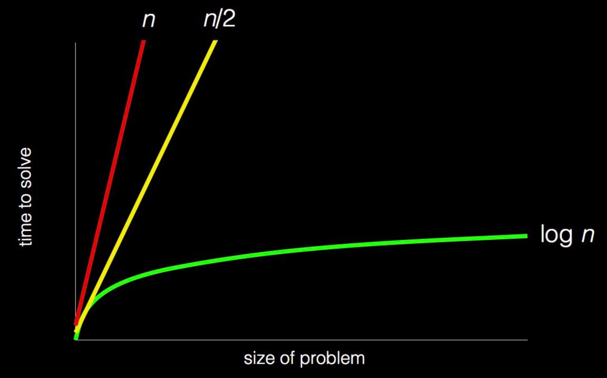

本文总结了cs50 week0 的note，介绍了什么是计算机科学，如何表示数据，算法以及伪代码，Scratch 的简单介绍。
课程主页：https://cs50.harvard.edu/college/weeks/0/notes/
计算机科学是什么
- 计算机科学本质是解决问题——通过编程
- 我们可以考虑问题解决作为一个获取输入 input（问题的细节），生成一些输出 output的过程（问题的解），中间的黑箱就是我们在课程中需要逐渐学习的

- 我们需要一个方法来标准化表示这些输入。
二进制
在计算机中，最底层是用二进制储存数据的，0和1两个数字。这映射了计算机如何使用电，这样控制开关是很简单的。
通过足够多的 bits 我们可以表示很大的数字；为了表示字母，我们需要将数字映射到字母上，有一个标准映射规则叫 ASCII ，比如字母 A 就是数字 65，字母 B 是 66。
一个字节 (byte) 是 8个 bits，我们使用它作为一个单元来管理 bits。
基于代码的背景，计算机程序知道是否这个二进制数应当为翻译成数字，还是字母或者其他的信息
表示数据
抽象(Abstraction) 是低层次的实现（比如数据是怎么被二进制存储的）被简化，抽象所以我们可以在更高层次上（比如表示字母）使用它。
在标准的美式键盘上，很多其他的标识和字母都没有显示，为了解决这一问题，计算机可以表示除了 ASCII 之外的字符，由此产生了新的标准 Unicode ，它可以用多个bytes表示有重音符号的字母，表情等
当我们收到一个表情时，我们的计算机实际上收到的是一个二进制数，这个二进制数映射了这个表情的图像
计算机也可以使用二进制来表示图像，通过三个比特，每个都表示一定大小的红，绿和蓝，我们可以通过它来表示百万种颜色
每个图像都被成千上万个像素组成，或者说颜色方块。
- 而电影是由很多图像在一秒内以一定帧数显示的
- 我们可以考虑电影是由图像抽象而成的，图像是由像素抽象而成的，像素是由bits 抽象而成的
算法
- 现在我们可以表示输入和输出了，前面提到的黑箱将会包含算法，就是解决问题的一步一步的指令。
- 考虑我们从一个通讯录中想要找到 “Mike Smith” 这个人，我们有很多中办法：
- 一页一页的翻页直到找到 “Mike Smith” 或者翻到书末
- 两页两页的翻页，但是我们需要往前翻一页如果翻过了
- 最高效的办法是打开书到中间，查看 Mike 是在前一半还是后一半（因为通讯录是按字母排序好的），不断重复这样的过程
- 我们可以用下面的图标来表示每种算法的性能：

伪代码
- 我们可以用伪代码来表示上述算法，一些行是由动词开始的，我们称这些为函数 functions；如果有问题导致了不同的路径，我们称其为条件语句 conditions ；问题的答案决定了我们去往哪里，这被称为布尔表达式 Boolean expressions，它返回的 true 或者 false；我们还有词句来表示循环 cycles，由此我们可以重复程序的部分，这被称作 loops
0 pick up phone book
1 open to middle of phone book
2 look at names
3 if Smith is among names
4 call Mike
5 else if Smith is earlier in book
6 open to middle of left half of book
7 go back to step 2
8 else if Smith is later in book
9 open to middle of right half of book
10 go back to step 2
11 else
12 quitScratch
这是一个可视化的编程语言叫做 Scratch，我们可以通过拖拽包含指令的块来编程